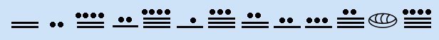
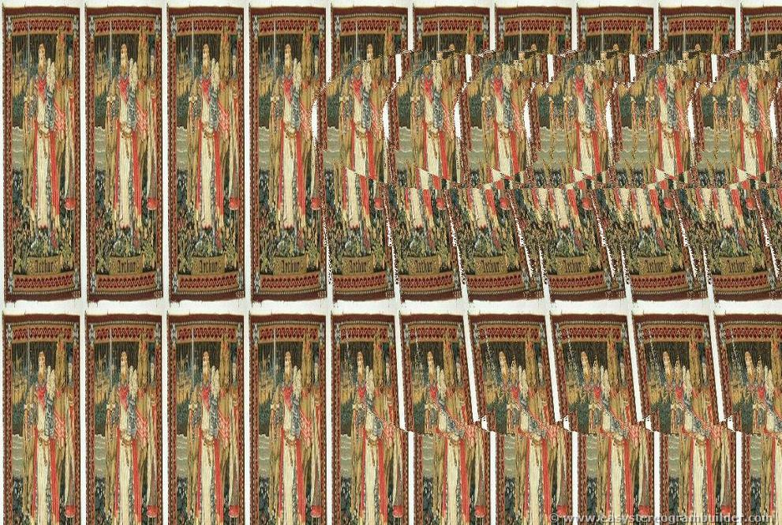

2012 subreddit: the banner and two signed images
Inspect the preserved banner, extract both hidden messages, and trace the visible title-key prefix.
On this page
The 2012 subreddit was more than a list of encrypted story titles. Its banner displayed a numerical clue, while two posted JPEGs carried signed instructions. Those three artifacts clarify where the title key and its signing key entered the public route. The saved files come from a pinned artifact archive; its accompanying post inventory identifies the two image posts as o3hoi (“Welcome”) and o6n9a (“Problems?”). That inventory is a later snapshot, not a contemporaneous capture of every edit.
The welcome mat establishes a signing key
KXLOP.jpg. Download original JPEG.A fresh outguess -r KXLOP.jpg run extracted 1,089 bytes, exactly matching the archive’s saved payload. The text says subsequent messages will be signed with the key identified in the subreddit information as 7A35090F, and asks for patience. GPG accepted its signature under the preserved full fingerprint 6D854CD7933322A601C3286D181F01E57A35090F. This verifies the message against that key; it does not independently establish who controlled the key or Reddit account.

The banner shows the start of the title key

Reading a bar as five and a dot as one gives 10, 2, 14, 7, 19, 6, 18, 12, 7, 8, 17, 0, 19; the eye-shaped twelfth mark is read as zero in the archive’s stage account. These thirteen values equal the prefix a2e7j6ic78h0j when letters represent a=10 through z=35 and digits retain their values. The complete archived subreddit-info string continues as a2e7j6ic78h0j7eiejd0120. The banner alone does not display that longer suffix, so a reader must not infer the full title-decryption key from the picture alone. The Mabinogion walkthrough applies the full key to the ordered post titles.
The later image points back to the visible key

8D7hN.jpg, a stereogram. Download original JPEG.Fresh OutGuess retrieval from this file produced 1,041 bytes, again identical to the archived payload. Its signed text says the key has been “right in front of your eyes” and warns against making the quest harder. GPG verified the same preserved fingerprint. This wording is consistent with looking back at visible subreddit material, but the payload does not formally specify a cipher algorithm or prove which visual detail a solver noticed first.

Check the preserved files
The replay script checks all five artifact hashes and the two saved payloads. With an OutGuess executable and GPG installed, it also performs both extractions and signature checks in a temporary directory:
python scripts/replay_2012_subreddit_images.py --outguess /path/to/outguess --gpg /path/to/gpg --output subreddit-images-check.jsonWithout those optional executables, the script checks only saved files. Our published run report records two successful fresh byte comparisons and two valid signatures. The post inventory also contains an earlier deleted “Problems?” image link; this replay addresses the later 8D7hN.jpg carrier, not that deleted upload. Continue to the post-title and book-code replay for the next operation.